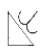
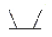
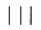
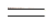
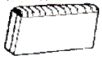
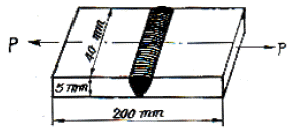

용접산업기사 (2007-03-04 기출문제)
1과목: 용접야금 및 용접설비제도
1. 용접부 고온 균열 원인으로 가장 적합한 것은?
- 낮은 탄소 함유량
- 응고 조직의 미세화
- 모재에 유황성분이 과다 함유
- 결정 입내의 금속간 화합물
(정답률: 69%)

2. 용융 슬래그 중에 FeO 와 CaO 이 존재하는 경우에 용융강의 반응이 일어난다. 어떤 반응이 일어나는가?
- 탈인 반응
- 탈산 반응
- 탈황 반응
- 단정 반응
(정답률: 39%)
3. 탄소공구강의 구비 조건으로 틀린 것은?
- 가격이 저렴할 것
- 강인성 및 내충격성이 우수할 것
- 내마모성이 작을 것
- 상온 및 고온경도가 클 것
(정답률: 64%)
4. 강의 연화 및 내부응력 제거를 목적으로 하는 열처리는?
- 침탄법
- 불림
- 풀림
- 질화법
(정답률: 89%)
5. 강(steel) 중의 유황에 의한 해(害)를 줄이기 위해 가장 필요한 원소는?
- 규소
- 망간
- 인
- 탄소
(정답률: 75%)
6. 황동의 종류에서 문쯔메탈(muntz metal) 이라고하며 복수기용 판, 열간단조품, 볼트, 너트 등 제조에 쓰이는 것은?
- 35~45% Zn 황동
- 25~35% Zn 황동
- 5~20% Zn 황동
- 5~10% Zn 황동
(정답률: 42%)
7. 용접시 발생하는 결함 중 선상조직(ice-flower structure) 이란?
- 용접비드의 표면에 발생하는 은점(fish eye)의 일종이다.
- 용접비드 토우부에 발생하는 균열(crack)의 일종이다.
- 용접금속의 파면에 극히 미세한 주상정이 서리 모양으로 나타난 것으로 수소가 원인이다.
- 용접금속부의 파단시 파단면에 물고기의 눈모양으로 나타난 것으로 수소가 원인이다.
(정답률: 78%)
8. 레데뷰라이트(Leadburite)를 옳게 설명한 것은?
- δ 고용체와 석출을 끝내는 고상선
- cementite 의 용해 및 응고접
- γ고용체로부터 α고용체와 cementite 가 동시에 석출되는 점
- γ고용체와의 Fe3C 와의 공정주철
(정답률: 62%)
9. 다음 중 체심입방격자가 아닌 것은?
- W
- Mo
- Al
- V
(정답률: 63%)
10. 금속의 조직 중에서 가장 경도가 높은 것은?
- 페라이트(ferrite)
- 투루스사이트(troosite)
- 펄라이트(pearlite)
- 시멘타이트(cementite)
(정답률: 53%)
11. 도면의 일부분을 잘라내고 필요한 내부모양을 도시하는 단면도는?
- 계단단면도
- 전단면도
- 회전단면도
- 부분단면도
(정답률: 84%)
12. 대상물을 구성하는 면을 평면으로 펼쳐서 그린 그림은?
- 외관도
- 전개도
- 곡선면도
- 선도
(정답률: 91%)
13. 구의 반지름을 나타내는 기호는?
- SE
- SW
- ST
- SR
(정답률: 95%)
14. 용접설비도면에 있는 가는 2점 쇄선의 용도로 가장 적합한 것은?
- 치수선
- 가상선
- 지시선
- 치수 보조선
(정답률: 67%)
15. 하나의 그림으로 물체의 정면, 우(좌)측면, 평(저)면의 3면의 실제모양과 크기를 나타낼 수 있어 기계의 조립, 분해를 설명하는 정비 지침서나, 제품의 디자인도 등을 그릴 때 사용되는 3축이 120°의 등각이 되도록 한 입체도는?
- 사 투상도
- 분해 투상도
- 등각 투상도
- 정투상도
(정답률: 87%)
16. 보기와 같이 용접부 및 용접부 표면의 형상을 나타내는 기호의 설명으로 올바른 것은?
- 영구적인 덮개 판을 사용한다.
- 제거 가능한 덮게 판을 사용한다.
- 끝단부를 매끄럽게 한다.
- 동일한 평면으로 다듬질한다.
(정답률: 81%)
17. 보기와 같은 KS 용접 보조기호의 명칭으로 가장 적합한 것은?

- 필렛 용접 끝단부를 2번 오목하게 다듬질
- K형 맞대기 용접 끝단부를 2번 오목하게 다듬질
- K형 맞대기 용접 끝단부를 매끄럽게 다듬질
- 필렛 용접 끝단부를 매끄럽게 다듬질
(정답률: 90%)
18. KS 규격 기계제도에서 얇은 부분의 단선 도시를 명시하는데 사용하는 선은?
- 아주 가는 실선
- 아주 굵은 실선
- 아주 가는 파선
- 아주 굵은 파선
(정답률: 40%)
19. 선의 종류에 의한 용도에서 가는 실선으로 사용하지 않는 것은?
- 치수를 기입하기 위하여 도형으로부터 끌어 내는데 쓰인다.
- 기술 ㆍ 기호 등을 표시하기 위하여 도형으로부터 끌어내는 데 쓰인다.
- 물체의 보이는 부분을 표시하는데 쓰인다.
- 치수를 기입하기 위하여 쓰인다.
(정답률: 62%)
20. 용접의 명칭에 따른 KS 용접기호 표시가 틀린 것은?
- 뒷면 용접 :

- 가장자리 용접 :

- 서페이싱 :
- 서페이싱 이음 :

(정답률: 75%)
2과목: 용접구조설계
21. 보기 그림과 같이 빗금친 부분의 이음으로 2개 이상이 거이 평행하게 겹친 부재의 끝면 사이의 이음으로 정의 되는 용접용어는?

- 변두리 이음
- T형 이음
- 겹치기 이음
- I형 이음
(정답률: 80%)
22. 용접부의 이음효율 공식으로 옳은 것은?
- 이음효율 = [모재의 인장강도/용접시험편의 인장강도]
- 이음효율 = [용접시험편의 충격강도/모재의 인장강도]
- 이음효율 = [모재의 인장강도/용접시험편의 충격강도]
- 이음효율 = [용접시험편의 인장강도/모재의 인장강도]
(정답률: 55%)
23. 용착부의 파단면에 나타나며 아주 미세한 기둥 모양 결정이 서리 모양으로 나란히 있고 그 사이에 현미 경적인 비금속 개재물과 기공이 있는 것은?
- 융합불량
- 비금속 개재물
- 은점
- 선상조직
(정답률: 74%)
24. 필릿 용접 이음의 수축 변형에서 모재가 용접선에 각을 이루는 경우를 각(角)변형이라고 하는데, 이와 똑같은 용어는?
- 횡굴곡
- 종굴곡
- 회전 수축
- 종수축
(정답률: 59%)
25. 연강을 용접 이음할 때 인장강도가 21kfg/mm2이다. 정하중에서 구조물을 설계할 경우 안전율은 얼마인가?
- 1
- 2
- 3
- 4
(정답률: 68%)
26. 레이저 용접의 특징 설명으로 틀린 것은?
- 좁고 깊은 용접부를 얻을 수 있다.
- 애입열 용접이 가능하다.
- 고속용접과 용접공정의 융통성을 부여할 수 있다.
- 접합하여야 할 부품의 조건에 따라서 한 방향의 용접으로 접합이 가능하다.
(정답률: 56%)
27. 잔류응력 경감법 중 용접선의 양측을 가스불꽃에 의해 약 150㎜에 걸쳐 150~200℃로 가열한 후에 즉시 수냉함으로써 용접선 방향의 인장응력을 완화시키는 방법은?
- 국부응력 제거법
- 저온응력 완화법
- 기계적 응력 완화법
- 노내응력 제거법
(정답률: 72%)
28. 다음 그림과 같은 용접부에 인장하중이 P =5000kgf 작용할 때 인장응력(kgf/mm2)은?

- 20
- 25
- 30
- 35
(정답률: 62%)
29. 용접이음을 설계할 때 주의사항으로 틀린 것은?
- 용접작업에 지장을 주지 않도록 공간을 남긴다.
- 맞대기 용접은 될 수 있는 대로 피하고, 필렛용접을 하도록 한다.
- 가능한 경우 아래보기 용접을 많이 하도록 한다.
- 용접이음을 한 쪽으로 집중되게 접근하여 설계하지 않도록 한다.
(정답률: 89%)
30. 피닝(peening)법의 설명으로 옳은 것은?
- 잔류 응력이 있는 제품의 용접부에 탄성 변형을 일으킨다음 하중을 제거하는 방법
- 특수 해머로 용접부를 두드려 펴면상에 소성 변형을 주는 방법
- 용접선의 양측을 가스불꽃에 의해 가열한 다음 곧수냉하는 방법
- 용접부 근방만을 국부 풀림하는 방법
(정답률: 94%)
31. 비파괴 검사중 자기검사법을 적용할 수 없는 것은?
- 오스테나이트계 스테인리스강
- 연강
- 고속도강
- 주철
(정답률: 65%)
32. 용접의 특성을 설명한 것 중 틀린 것은?
- 공정이 절감된다.
- 재료가 절약된다.
- 기밀, 수밀성을 얻을 수 있다.
- 용접부는 응력집중에 둔감하다.
(정답률: 84%)
33. 용접 후 처리에서 일반 구조용 압연강재의 노내 및 국부 풀림의 유지온도와 시간으로 가장 적당한 것은?
- 유지온도 : 625±25℃, 판 두께 25㎜에 대해 유지시간 2시간 동안 행한다.
- 유지온도 725±25℃, 판 두께 25㎜에 대해 유지시간 2시간 동안 행한다.
- 유지온도 : 625±25℃, 판 두께 25㎜에 대해 유지시간 1시간 동안 행한다.
- 유지온도 : 725±25℃, 판 두께 25㎜에 대해 유지시간 1시간 동안 행한다.
(정답률: 75%)
34. 이음의 한쪽 끝에서 다른 쪽 끝으로 용접을 진행하는 것으로 용접 이음이 짧거나 변형 및 잔류 응력이 별로 문제가 되지 않는 1층 자동용접의 경우에 가장 적합한 용착법은?
- 대칭법
- 전진법
- 후진법
- 비석법
(정답률: 70%)
35. 두께 30㎜이상의 연강판이라도 기온이 0℃이하로 떨어지면 저온 균열을 일으키기 쉬우므로 용접이음의 양폭 약 100㎜폭을 가열하는데 다음 중 약 몇 ℃로 가열하는 것이 좋은가?
- 약 40~70℃
- 약 70~100℃
- 약 100~130℃
- 약 130~170℃
(정답률: 54%)
36. 용접부의 내부결함 중 용착금속의 파단면에 고기눈 모양의 은백색 파단면을 나타내는 것은?
- 피트(pit)
- 은점(fish eye)
- 슬랙섞임(slag inclusion)
- 선상조직(ice flower structure)
(정답률: 91%)
37. 용접부에 구리로 된 덮개판을 두든지, 뒷면에서 용접부를 수냉 또는 용접부 근처에 물끼가 있는 석면, 천등을 두어 모재에 용접입열을 막음으로서 변형을 방지하는 방법은?
- 역변형법
- 억제법
- 피닝법
- 도열법
(정답률: 75%)
38. 용접 결함의 종류 중 구조상 결함에 속하지 않는 것은?
- 슬랙 섞임
- 기공
- 융합 불량
- 변형
(정답률: 80%)
39. 자기검사(MT)에서 피검사물의 자화방법이 아닌 것은?
- 코일법
- 극간법
- 직각 통전법
- 펄스 반사법
(정답률: 52%)
40. 주로 용접에 의한 변형을 적게 하기 위하여 띄엄띄엄 용접을 한 다음 냉각된 용접부 사이를 용접하는 방법은?
- 후진법
- 전진법
- 스킵법
- 블록법
(정답률: 86%)
3과목: 용접일반 및 안전관리
41. 저항용접에 의한 압접은 전기 저항열로써 모재를 용융상태로 만들고 외력을 가하는 접합하는 용접법이다. 이때 발생하는 저항열을 구하는 식은? (단, Q : 저항열, I : 전류, R : 전기저항, t : 통전시간[초])
- Q = 0.24 IR2t
- Q = 0.24 I2R2t
- Q = 0.24 I2Rt
- Q = 0.24 I3Rt
(정답률: 64%)
42. 남땜부를 용해된 땜납 중에 담가 납땜하는 방법과 이음부분에 납재를 고정시켜 납땜 온도를 가열 용융시켜 화학약품에 담가 침투시키는 방법은?
- 가스 납땜
- 담금 납땜
- 노내 납땜
- 저항 납땜
(정답률: 83%)
43. 정격 2차 전류 300[A], 정격사용율 50%인 아크 용접기로 실제 200[A]의 전류로 용접할 경우 허용 사용율은 몇 %인가?
- 200
- 156
- 112.5
- 98.7
(정답률: 54%)
44. 아크용접과 비교한 가스용접법의 특징으로 틀린 것은?
- 열원의 온도가 아크 용접에 비하여 낮다.
- 열에너지의 집중이 나쁘다.
- 설비비가 비싸고, 운반이 불편하다.
- 가열 범위가 커서 용접응력이 크고 가열시간이 오래 걸린다.
(정답률: 67%)
45. 아크 열이 아닌 와이어와 용융 슬랙사이에 통전된 전류의 전기 저항 열을 주로 이용하여 모재와 전극 와이어를 용융시켜 연속 주조방식에 의한 단층 상진용접을 하는 것은?
- 플라즈마 용접
- 전자빔 용접
- 레이저 용접
- 일렉트로 슬래그 용접
(정답률: 71%)
46. 알루미늄 용접에 가장 적합한 용접법은?
- 피복 아크 용접
- 불활성 가스 텅스텐 아크 용접
- 일렉트로 슬랙 용접
- 산소 아세틸렌 용접
(정답률: 80%)
47. 아크 용접기의 수하특성이란?
- 부하전압 감소시 단자전압이 감소하는 것이다.
- 부하전류 증가시 단자전압이 저하하는 것이다.
- 부하전압 증가시 단자전압이 증가하는 것인다.
- 부하전류 감소시 단자전압이 증가하는 것인다.
(정답률: 65%)
48. 용접자세에 사용되는 기호 중 “F" 가 나타내는 것은?
- 아래보기자세
- 수직자세
- 위보기자세
- 수평자세
(정답률: 90%)
49. 연료가스 중 실제발열량(kcal/m3)이 가장 많은 것은?
- 아세틸렌
- 프로판
- 메탄
- 수소
(정답률: 64%)
50. 미세한 알루미늄 분말, 산화철 분말 등을 이용하여 주로 기차의 레일, 차축 등의 용접에 사용되는 것은?
- 테르밋용접
- 넌 실드 아크용접
- 레이저용접
- 플라즈마 용접
(정답률: 85%)
51. 일반적으로 모재의 용융점보다 낮은 온도에서 용접할 수 있고 용접봉을 모재와 같은 계통의 공정합금을 사용하는 것은?
- 플라즈마 용접
- 접착 용접
- 레이저 용접
- 공정 저온 용접
(정답률: 72%)
52. 교류 아크용접기와 비교한 직류 아크용접기에 관한 설명 중 틀린 것은?
- 아크가 안정되어 있다.
- 전격의 위험이 많다.
- 아크 블로우가 발생한다.
- 보수관리 등 손질을 자주해야 한다.
(정답률: 59%)
53. 연강용 가스 용접봉에 GA 46 이라고 표시되어 있을 경우, 46이 타나내고 있는 의미는?
- 용착금속의 최대 인장강도
- 용착금속의 최저 인장강도
- 용착금속의 최대 중량
- 용착금속의 최소 두께
(정답률: 73%)
54. 용접 흄(fume)에 대하여 서술한 것 중 올바른 것은?
- 용접흄은 인체에 영향이 없으므로 아무리 마셔도 괜찮다.
- 실내 용접 작업에서는 환기설비가 필요하다.
- 용접봉의 종류와 무관하며 전혀 위험은 없다.
- 용접흄은 압자상 물질이며, 가제마스크로 충분히 차단할 수가 있으므로 인체에 해가 없다.
(정답률: 84%)
55. 아세틸렌 용기에 화염이 쌓였을 때 가장 먼저 조치를 해야 할 사항은?
- 젖은 거적으로 용기를 덮는다.
- 소화기로 소화한다.
- 용기를 실외로 내 놓는다.
- 아세틸렌 밸브를 열어버린다.
(정답률: 60%)
56. TIG 용접시 교류용접기에 고주파 전류를 사용할 때의 특징이 아닌 것은?
- 아크는 전극을 모재에 접촉시키지 않아도 발생된다.
- 전극의 수명이 길다.
- 일정 지름의 전극에 대해 광범위한 전류의 사용이 가능하다.
- 아크가 길어지면 끊어진다.
(정답률: 65%)
57. 산소용기의 취급상 주의사항 설명으로 틀린 것은?
- 용기는 항상 70℃ 이하를 유지해야 한다.
- 충격을 주지 않아야 한다.
- 밸브, 기타 등에 기름이 묻어서는 안된다.
- 직사광선에 노출시키지 않아야 한다.
(정답률: 88%)
58. 아크 용접기의 규격 표시 중 AW 300은?
- 1차 전압이 300 [V]임을 나타낸다.
- 2차 전압이 300 [V]임을 나타낸다.
- 정격 1차 전류가 300 [A]임을 나타낸다.
- 정격 2차 전류가 300 [A]임을 나타낸다.
(정답률: 54%)
59. 비드 층을 쌓아 올리는 법으로 다층 살 올림법에서 가장 많이 사용되는 법은?
- 대칭법
- 스킵법
- 빌드업법
- 캐스케이드법
(정답률: 70%)
60. 점(spot) 용접시의 안전사항 중 틀린 것은?
- 장갑을 착용 하여야 한다.
- 점 용접기에 반드시 어스를 하여야 한다.
- 판재의 기름을 제거한 후 용접한다.
- 작업시 보호안경은 착용하지 않는다.
(정답률: 88%)